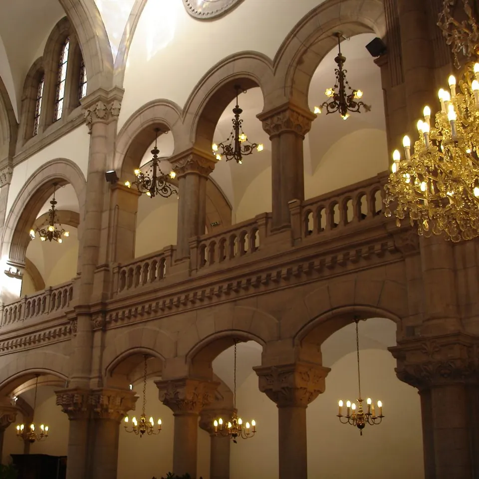
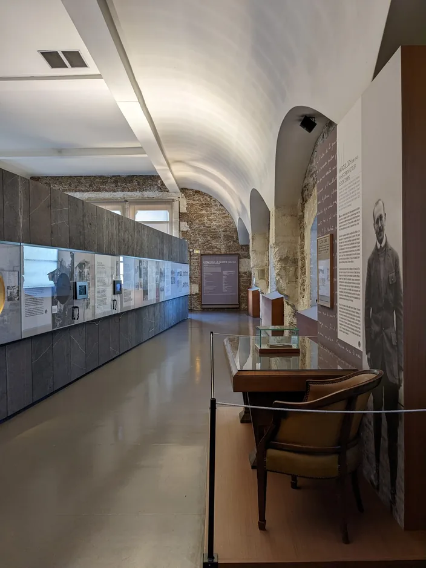
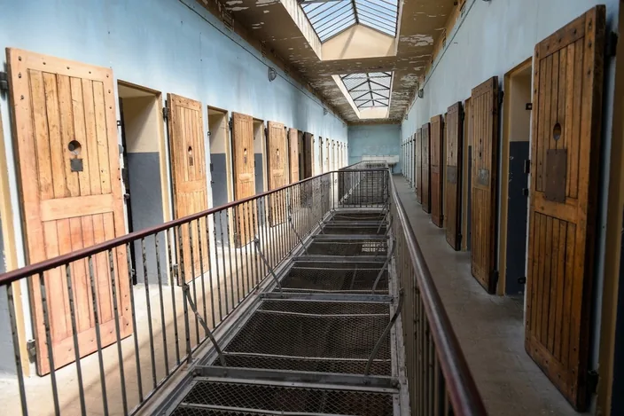
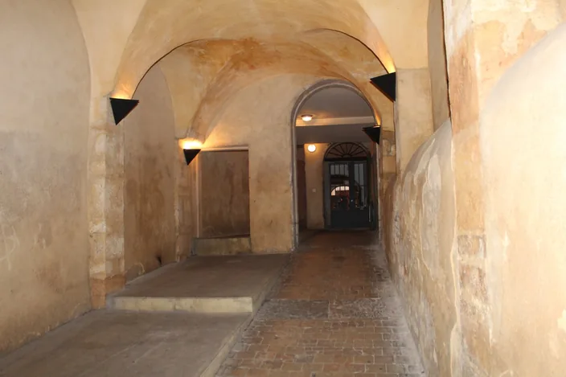
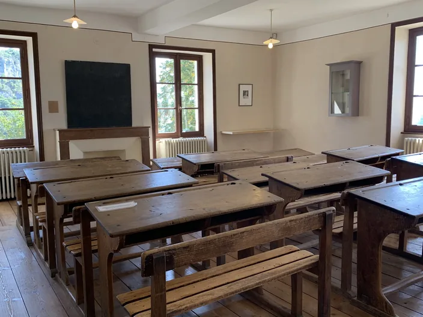

Guided tour of Jewish Lyon
A Jewish guide leads the visit in English, French or Spanish, with the inside of the Grande Synagogue. Sunday to Friday midday.
Book on WhatsApp mishpacha tours
mishpacha tours
Resorts
Les Deux AlpesCourchevelVal ThorensMegèveAlpe d'HuezVal d'IsèreLes ArcsLa PlagneChamonixAnnecyGrenobleZermattSt. MoritzCrans-MontanaCerviniaCourmayeurCortina d'Ampezzo
City walkJewish Lyon is a private 2 h 30 walking tour of Vieux Lyon and the Grande Synagogue, guided in English, French or Spanish, 290 € per group of 1 to 4 people (+35 € per extra person up to 10), with free cancellation up to 24 hours before. Hebrew-speaking guests are guided in English. Rue Juiverie and medieval Old Lyon, the Grande Synagogue on quai Tilsitt from the inside, and rue Sainte-Catherine: two and a half hours on foot with a guide who is part of the community she shows you. The Grande Synagogue is closed to visitors outside the Heritage Days. Entry requires a special authorisation that Mishpacha Tours holds. This is the only tour that takes you inside, subject to opening hours and security on the day.
We start in rue Juiverie and the medieval streets of Vieux Lyon, where Lyon's Jewish community lived before the expulsions of the Middle Ages.
From rue Juiverie we walk to the Grande Synagogue on quai Tilsitt and go inside: the Ark of the Law, the arcades of the women's gallery, a working synagogue that is closed to visitors outside the Heritage Days. Entry depends on opening hours and on security clearance on the day; your guide confirms before the walk begins.
We finish on rue Sainte-Catherine, where the wartime story of Lyon's Jews meets the story of the Resistance, and where your guide answers the questions the walk has raised.
Entry depends on the synagogue's opening hours and on security clearance on the day. Your guide checks and confirms with you before the walk begins.
English, French or Spanish. We do not run tours in Hebrew: Hebrew-speaking guests are guided in English. Tell us your preferred language when you book.
Yes, free cancellation up to 24 hours before the start time.
Yes, on request, on any tour. It is priced separately and quoted on demand, never included in the tour price.

MemoryA private visit of the Centre d'histoire de la résistance et de la déportation
290 € per group, 1 to 4 people

MemoryThe Montluc memorial, then the second synagogue we take you inside
290 € per group, 1 to 4 people

City walkThree hours in Jewish Lyon while your transfer waits
390 € per group, 1 to 5 people

Day tripA full day at the Maison d'Izieu, one hour from Lyon
from 990 € quote on request
One request, we organise everything, from the table to the transfer.
A Jewish guide leads the visit in English, French or Spanish, with the inside of the Grande Synagogue. Sunday to Friday midday.
Book on WhatsApp
Shabbat meals, meals delivered to your hotel, a minyan close by.
See the detailsBook on WhatsApp
A chef in your apartment or your chalet, in a kitchen made kosher.
See the detailsBook on WhatsApp
Lyon airport, Geneva, the Alpine resorts. Never during Shabbat.
See the detailsBook on WhatsApp
A quiet presence beside your group, only when you ask for it.
See the detailsBook on WhatsApp